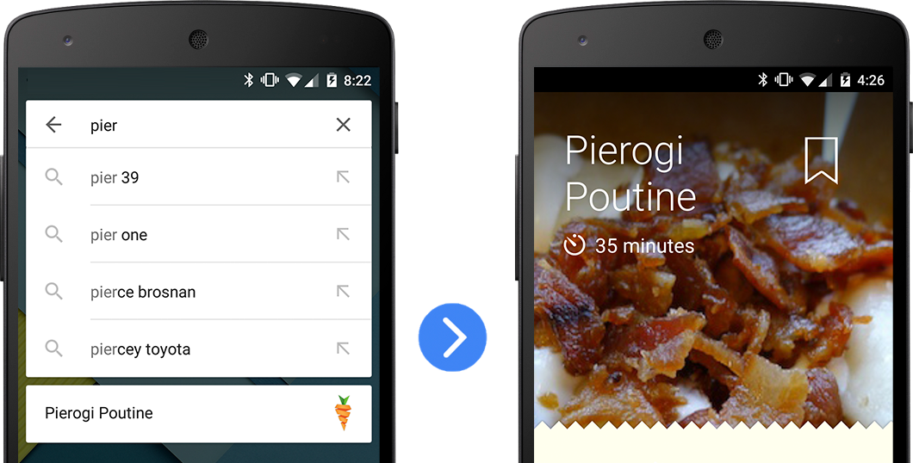
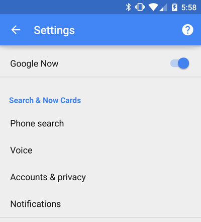
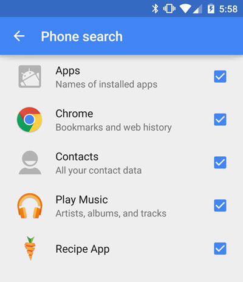
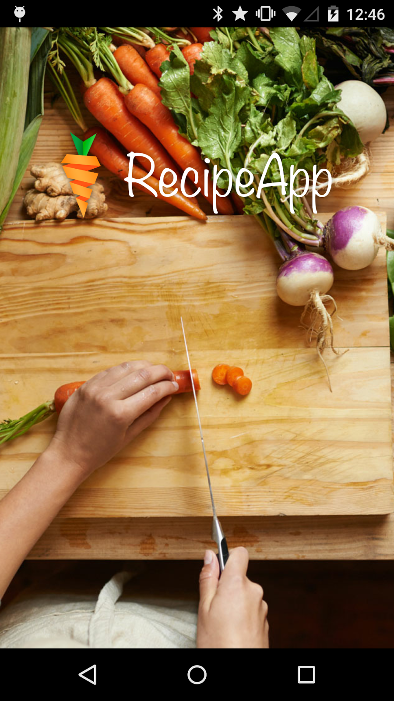

In this codelab, you’ll learn how to send page view data to the App Indexing API. This allows Android to show custom autocomplete results for your app's users in the Google search app.
You’ll be able to play with the sample app and see autocomplete results show up in the Google app.
What you’ll learn
- Recording pageviews with the App Indexing API
- Displaying custom autocomplete results in the Google app
What you’ll need
- Android Studio version 1.0+
- The sample code
- The Google app version 2.8+
- A device with Android 4.1+
You can either download all the sample code to your computer...
...or clone the GitHub repository from the command line.
$ git clone https://github.com/google/search-samples.git
First, let’s see what the finished app looks like. Open the completed sample app in Android Studio:
- Select the

app-indexingdirectory from the sample code(Quickstart > Import Project… >app-indexing). - Click the
 Gradle sync button.
Gradle sync button. - Enable USB debugging on your Android device.
- Plug your Android device and click the
 Run button. You should see the Recipe App home screen appear after a few seconds.
Run button. You should see the Recipe App home screen appear after a few seconds. - Open a command line terminal on your computer and enter the following Android Debug Bridge command:
adb shell am start -a android.intent.action.VIEW \ -d "http://recipe-app.com/recipe/pierogi-poutine" com.recipe_app
- This command should launch the app with the given URI, which points to a recipe. Verify that the app opens with the delicious recipe on the screen.
Next, you'll test that this recipe is available from the Google app as an autocomplete result.
Frequently Asked Questions
Duration: 1:00
Before you can see autocomplete results from your app in the Google app, we need to make sure that autocomplete is enabled for the sample recipe app.
- Go to the Google app and click on Settings.
- From the settings page, click on Phone search.

- Make sure that the checkbox beside the sample app is checked. If you don’t see the sample app there, you haven’t recorded any pageviews yet.

- Once autocomplete is enabled for the sample app, test it out to make sure that it works properly.
- Open the Google app, and start typing "pierogi poutine" in the search box.
- You should see an autocomplete result for the sample app.
- Click on the autocomplete result to get the intent chooser dialog.
- Select your app from the list and make sure that it opens the correct view in your app.

Now you’re ready to build on top of the starter project to add search autocomplete to it.
- Select the
android-deep-linkingdirectory from your sample code download (File > Import Project… >android-deep-linking). - Click the Gradle sync button. If this button is grayed out, wait for Android Studio to finish “Indexing” (you can see progress in the lower right).
- Click the Run button. You should see the Recipe App home screen appear after a few seconds.
That’s all that the app does for now. Next, we’ll add the App Indexing API so that we can record pageviews.
The next thing we need to do is add the App Indexing API to our project.
If your app is already using Google Play services, you need to make sure that you are using version 5 or higher and minSdkVersion 17 or less.
Here’s what you need to do to just add the App Indexing API Jar file to your project.
- Add the following extras from the
 SDK Manager if you don't already have them:
SDK Manager if you don't already have them:
- Android support repository
- Google Play services
- Google repository
- Add the App Indexing library to your Gradle build file dependencies.
build.gradle
- Once the dependencies are declared, run Gradle sync to update the Android Studio project.
Now your project has access to the App Indexing API and you can start recording pageviews in your app.
Frequently Asked Questions
Before we can make calls to the App Indexing API, we need to add an instance of GoogleApiClient to our Activity. This can be done in the onCreate() method as follows:
RecipeActivity.java
Now that we've created an API client, we're ready to start indexing the page views in our app. In this step, we'll tell Google that the user has viewed a specific page within our app. This will make that page available as an autocompletion the next time they search for this topic in the Google app.
Add the TAG and BASE_APP_URI constants to the top of RecipeActivity and then add the onStart() method to the body of the RecipeActivity class.
RecipeActivity.java
Notice that we need to pass in the title of the page. This is what will be shown to the user in the search autocomplete, and it is also the text that is used to determine what queries to show the autocomplete result for.
We also pass in the URI that corresponds to the Android app deep link for the current page. This is the deep link that is triggered when the user clicks on the autocomplete result.
When a user has finished viewing a page, it's important to send an update to the API to notify it that the pageview is completed.
Add the following onStop()method to the RecipeActivity class:
RecipeActivity.java
This method is very similar to the start() method. It also sends a title and a deep link URI. Calling this method allows the API to measure how long the the user spent on the page.
Now let's test this in the Google app to see the autocompletions for our sample app.
- Click the Run button. You should see the Recipe App home screen appear after a few seconds.
- Open some pages in the sample app using the Android Debug Bridge.
adb shell am start -a android.intent.action.VIEW \ -d "http://recipe-app.com/recipe/pierogi-poutine" com.recipe_app
- Using the Google app, do a search for the title (“pierogi poutine”) of one of the pages in your app.
- You should see the sample app listed in the autocomplete results.
- Click on the autocomplete result and make sure that it deep links to the correct view in the sample app.
- You can verify that the page views have been indexed by checking your app history.

Your app is now ready to show autocomplete results from the Google app powered by deep links and the App Indexing API.
What we've covered:
- Recording pageviews with the App Indexing API
- Displaying custom autocomplete results in the Google app
Next Steps:
- Add autocomplete to your own app
- Learn how to add deep links to your website
If you would like to find out more about App Indexing please see the full developer documentation.
You can post questions and find answers on Stack Overflow under the deep-linking or android-app-indexing tags.